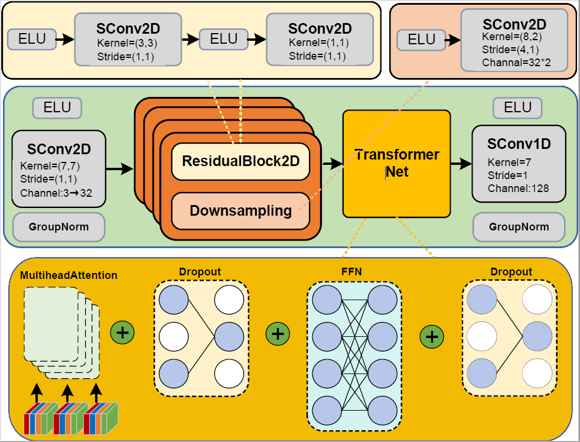
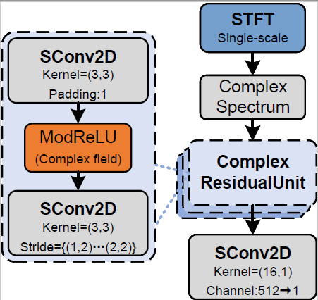
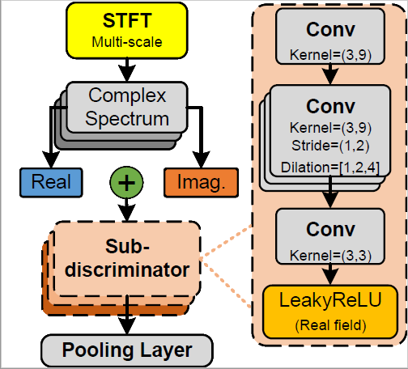

Diffcodec: Generative Codec Based on Diffusion Model for Speech Coding
Huaifeng Zhang 1, Yong Gao2, Guigeng Li1, Xiaodong Wang3, Peifei Wu1, Zhen Wang 1, Yuan An1, Hao Zhang1*,
1College of Electronic Engineerin, Faculty of Information Science and Engineering, Ocean University of China, QingDao, 266404, China
2College of Shipbuilding Engineering, Qingdao Innovation and Development Base of Harbin Engineering University, QingDao, 266000, China
3Strategic Innovation Center, Qingdao Digitech Technology Co., Ltd., QingDao, 266101, China
Abstract.
To ensure encoding real-time performance, traditional time-domain end-to-end speech codecs only adopt waveform information as input features and ignore original phase information. Such codecs rely on strong waveform
reconstruction capabilities to recover phase, and although they can achieve high speech intelligibility and quality, the phase problem remains an insurmountable challenge, resulting in limited room for speech quality improvement.
Addressing the limitation that traditional time-domain codec frameworks underutilize phase information in the field of speech coding, this study takes phase information reconstruction as the core entry point, breaks through the
constraints of time-domain coding-decoding paradigms, and proposes a complex spectrum-based encoder and decoder with amplitude and phase information as input features. The model leverages complex convolution layers and Transformer
architecture to capture feature correlations. Meanwhile, a set of complementary complex spectrum discriminators are designed: a multi-scale complex discriminator for holistic complex feature processing (constraining the model to
learn complete complex information), and a single-scale complex discriminator specifically targeting amplitude and phase (constraining the model to learn amplitude and phase information). These two discriminators synergistically
form the Generative Adversarial Network (GAN)-based Comcodec model. Considering the mutual interference between the quantization process and the adversarial generation process, the model integrates a balanced training strategy
and a phased training strategy to enhance the stability of adversarial training. Comprehensive experiments were conducted to validate the model's performance: ablation experiments confirm the effectiveness of the synergistic
effect between the model structure and training strategies, and the two form a synergistic gain to steadily improve model performance; comparative experiments demonstrate that the model achieves a leading advantage in output
speech quality among mainstream codecs in recent years, with speech quality assessment metrics reaching Perceptual Evaluation of Speech Quality (PESQ) of 3.31 and Virtual Speech Quality Objective Listener (ViSQOL) of 3.99;
latency experiments show that the model has a Real-Time Factor (RTF) of 0.048, with encoding efficiency comparable to that of time-domain end-to-end models, breaking through the bottleneck of timeliness limitations in complex
spectrum coding; cross-dataset experiments verify the model's strong generalization capability. Additionally, this study analyzes the feasibility of model deployment, which exhibits good compatibility with mainstream deployment
platforms. In summary, the proposed Comcodec is a novel complex feature-based codec with superior encoding performance, providing a new high-performance and real-time technical solution for the speech coding field.
Keywords: speech codec; generative adversarial network; complex feature
This page is for research demonstration purposes only.
Comcodec model

Comcodec model structure framework.
Functional modules
Internal functional module structure of the comcodec model.
The Structure of The U-NET Network
 
Structural topology of the U-Net network.
Output speech of the model variant
We select 5 speech samples from three speakers.| Models | 121_121726_000005_000001.wav | 121_121726_000020_000001.wav | 1089_134686_000005_000001.wav | 1089_134686_000020_000001.wav | 1995_1836_000042_000000.wav | 1995_1836_000045_000000.wav |
|---|---|---|---|---|---|---|
| Original input | ||||||
| Coding output | ||||||
| GAN-v1 | ||||||
| GAN-v2 | ||||||
| GAN-v3 | ||||||
| GAN-v4 | ||||||
| GAN-v5 | ||||||
| Diff-v1 | ||||||
| Diff-v2-v1 | ||||||
| Diff-v2-v2 | ||||||
| Diff-v2-v3 | ||||||
| Diff-v2-v4 | ||||||
| Diffcodec |